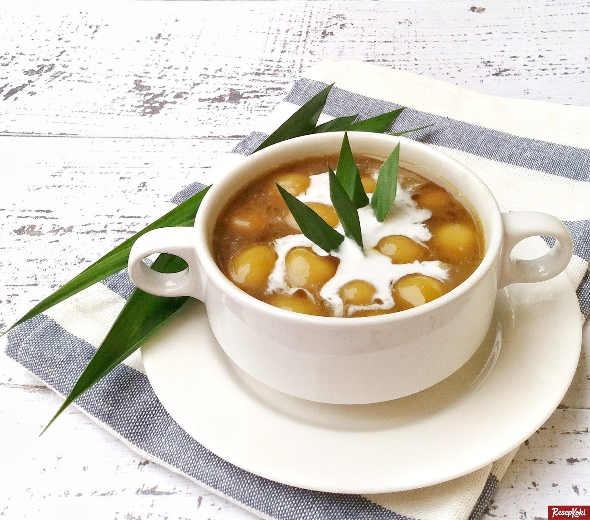
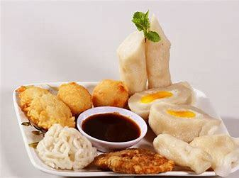
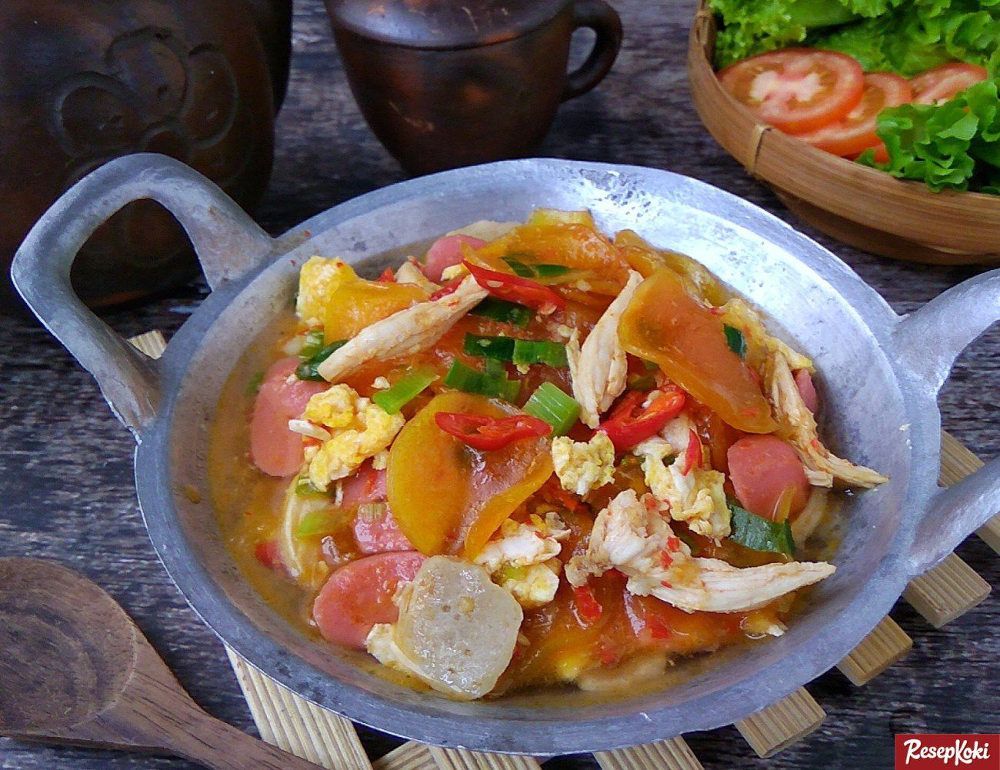

Di Posting Oleh Zahra Salsabila

Candil Ketan
Bahan - Bahan
Bahan Utama
30 gr tepung tapioka
200 gr tepung ketan
1/3 sdt garam
air hangat secukupnya
Bahan Kuah
800 ml air
150 gula merah, disisir
2 lembar daun pandan ditali simpul
Bahan Larutan Pengental
1 sdm tepung beras atau boleh lebih jika suka kuah yang kental
1 sdm tepung ketan atau boleh lebih jika suka kuah yang kental
Campur semua bahan dan tambahkan sedikit air, aduk hingga larut dan tidak ada yang bergerindil
Bahan Kuah Santan
1/4 sdt garam
400 ml santan kental
buah nangka Secukupnya
Cara Membuat
a. Campur tepung ketan, tepung tapioka dan garam, tuangi air hangat secukupnya sampai adonan lembut dan enak buat dipulung ( kalau terlalu lembek boleh ditambahi tepung ketan lagi).
b. Siapkan nampan, taburi tipis2 dengan tepung kanji. Ambil secuil adonan bentuk bulat sebesar kelereng. Susun di atas nampan. Lakukan sampai adonan habis
c. Masak semua bahan kuah kuah gula merah hingga gula larut dan mendidih. Saring lalu masak lagi sampai mendidih. Masukkan bola bola ketan. Masak dengan api kecil hingga gula meresap dan warna bola bola ketan berubah kecoklatan.
d. Masukkan larutan tepung , aduk pelan sampai kental dan meletup2. Jika kurang kental bisa ditambahkan tepung ketan/ tepung beras yang dicairkan lalu dimasak lagi sampai kental. Sajikan dengan kuah santan.
Di Posting Oleh Zahra Salsabila

Pempek
Bahan - Bahan
Bahan Biang
200 gr terigu
400 ml air
Garam dan gula Secukupnya
Bahan Adonan
5 siung bawang putih dihaluskan
3 butir telur dikocok (dicampur ke dalam adonan pempek)
400 gr sagu tani
Bahan Isian
2 butir telur dikocok beri sedikit garam dan gula
Cara Membuat
a. Dalam panci campur terigu, air, garam dan gula. Aduk rata. Nyalakan api, masak sambil diaduk-aduk sampai menggumpal seperti bubur (hati-hati gosong) Angkat. Biarkan hangat.
b. Pindahkan biang yang sudah tidak panas ke dalam baskom. Dalam keadaan hangat tambahkan bawang putih, telur kocok. Aduk rata pakai sendok kayu.
c. Masukkan sagu sedikit-sedikit. Aduk rata. Balur tangan dengan sagu, ambil sebagian adonan bentuk silinder
d. Buat lubang dengan menggunakan jari telunjuk. Bentuk seperti contong kemudian isi dengan telur kocok
e. Tutup adonan pempek rapat-rapat supaya tidak terbuka pada saat direbus. Rebus pempek dalam air mendidih sampai matang, angkat.
Di Posting Oleh Zahra Salsabila

Seblak
Bahan - Bahan
Bahan Utama
6 butir bakso
200 g ceker
2 genggam kerupuk (redam di air biasa 2 jam)
Bahan Bumbu Halus
3 siung bawang putih
4 siung bawang merah
3 butir kemiri
1 ruas jari kencur
6 cabe rawit pedas
8 cabe merah keriting
5 cabe rawit hijau (untuk irisan)
1 bonggol sawi sendok
1 batang daun bawang
Air kaldu rebusan ceker (sesuai selera)
2 butir telur yang sudah di orak arik
Gula, garam, kaldu bubuk, lada bubuk secukupnya
Cara Membuat
a. Tumis bumbu hingga matang. Tambahkan bakso, ceker, kerupuk yg sudah di rendam, garam, gula, lada, saus tiram, kaldu bubuk. Masak sebentar.
b. Tambah air kaldu, masak hingga mendidih. Masukkan daun sawi, daun bawang, dan cabe rawit iris, masak hingga sayuran matang.
Di Posting Oleh Zahra Salsabila
Batagor
Bahan - Bahan
Bahan Batagor
250 gr ikan fillet tenggiri buang kulitnya
2 butir telur (jika besar boleh pakai 1 butir)
½ sdt meres garam
1 sdt gula putih
½ sdt lada putih bubuk (optional)
5 sdm tepung tapioka/sagu
2 sdm tepung terigu
4 buah bawang putih potong goreng
5 buah tahu pong segi4 bagi 2
1 lembar daun bawang iris tipis
15 lembar kulit pangsit
Sambal Batagor
100 gr kacang tanah
6 buah cabai rawit merah
6 buah cabai merah keriting
3 buah bawang putih
100 cc air putih
1 sdm gula merah
½ sdt garam
Cara Membuat Batagor
a. Masukan seluruh bahan kedalam chopper, blender hingga halus, koreksi rasa.
b. Campurkan irisan daun bawang, aduk hingga rata.
c. Isi tahu dengan 1 sdm adonan, isi kulit pangsit dengan 1sdt adonan, Goreng dalam api sedang hingga kecoklatan.
Cara Membuat Sambal Batagor
a. Goreng seluruh bahan. Blender dengan air, garam, gula.
b. Siapkan sedikit minyak, masak dalam api kecil hingga mengeluarkan minyak.